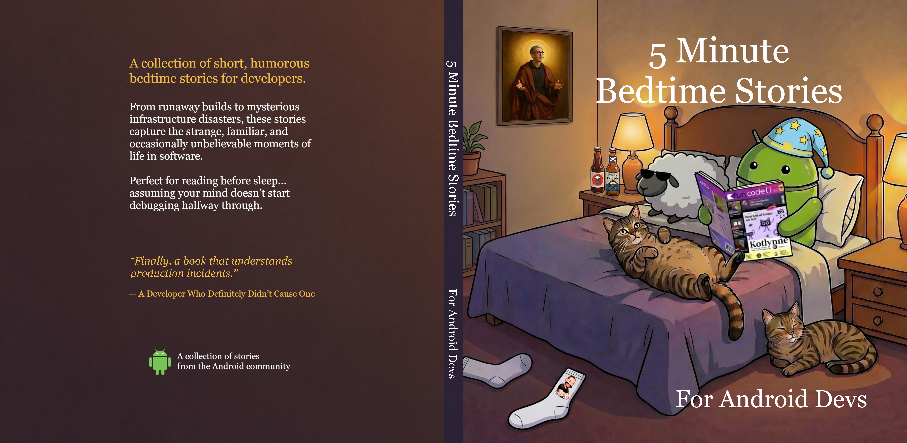

Free digital book for the Android dev community
5 Minute Bedtime Stories
For Android Devs
A free digital collection of short bedtime stories for developers: funny, slightly unbelievable, and occasionally suspiciously specific.
This book began, like many good ideas, late at night. After long days at conferences, meetups, and talks, a group of developers would often find themselves gathered together, sharing stories. The kind of stories that only make sense if you’ve lived through them. Stories about bugs, strange systems, questionable decisions… and the occasional disaster.
More often than not, many of those stories were about the disasters Ash Davies brought upon himself.
At some point, it became a running joke that these stories deserved to be written down. Naturally, the only reasonable next step was to actually do it. So here we are.

About the book
Conference stories, production mistakes, and developer folklore
Some stories in this book are funny. Some are slightly unbelievable. Some are… suspiciously specific.
Not every story in this book is guaranteed to be entirely true. But as the Irish say: “Never let the truth get in the way of a good story.”
To protect the innocent (and the guilty), the authors are not matched to their stories. You are free to guess who wrote what.
Enjoy the stories, and hopefully get a good night’s sleep.
Open the PDF right away. No signup, no JavaScript, no friction, and no reason to overthink it.
Conference stories, real disasters, and the kind of software folklore every Android developer recognizes immediately.
A book you can read in one sitting, send to a teammate, or drop into a group chat the next time release week gets weird.
What you get
A short, free read made for Android developers
The goal is simple: a free digital book you can open immediately, finish without effort, and share with other Android developers who have seen enough production incidents to appreciate the joke.
If you have ever come back from a conference dinner with a story that should probably never be repeated in a postmortem, this book is for you.
It works as a quick personal read, a lightweight gift for another Android developer, or a link worth passing around when everyone on the team needs a reminder that software chaos is universal.